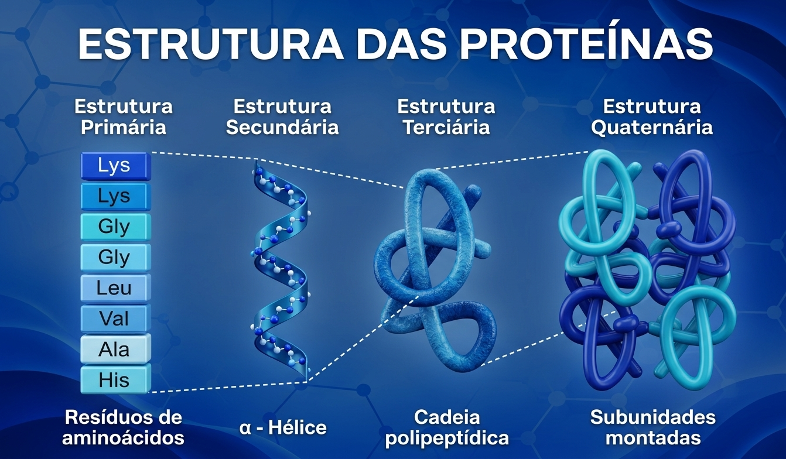
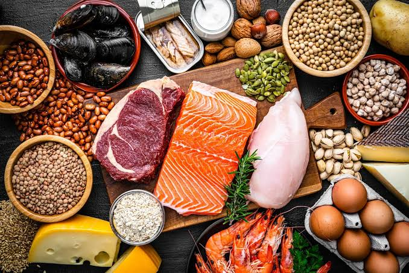

🥚 Aminoácidos e Proteínas
Aminoácidos são monômeros que contêm um grupo amina e um grupo carboxila. Quando ligados em cadeia, formam as proteínas.
A Ligação Peptídica
As proteínas são sintetizadas através da ligação peptídica, um elo formado entre o grupo carboxila de um aminoácido e o grupo amina de outro.
Duas Funções Fundamentais
Função enzimática: aceleram reações químicas no metabolismo, como a lactase.
Função estrutural: dão sustentação aos tecidos, como o colágeno e a queratina.
Exemplo do Cotidiano
A clara do ovo é rica em albumina; a queratina está presente nos cabelos e nas unhas.

As proteínas podem se organizar em diferentes níveis estruturais.

Ovos, peixes, carnes e leguminosas são fontes de proteínas na alimentação.